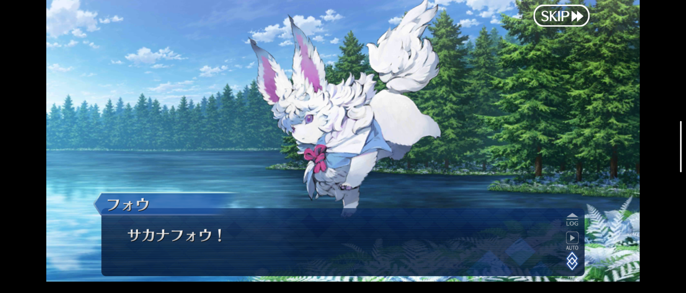
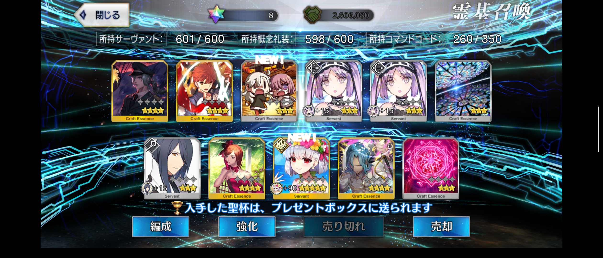
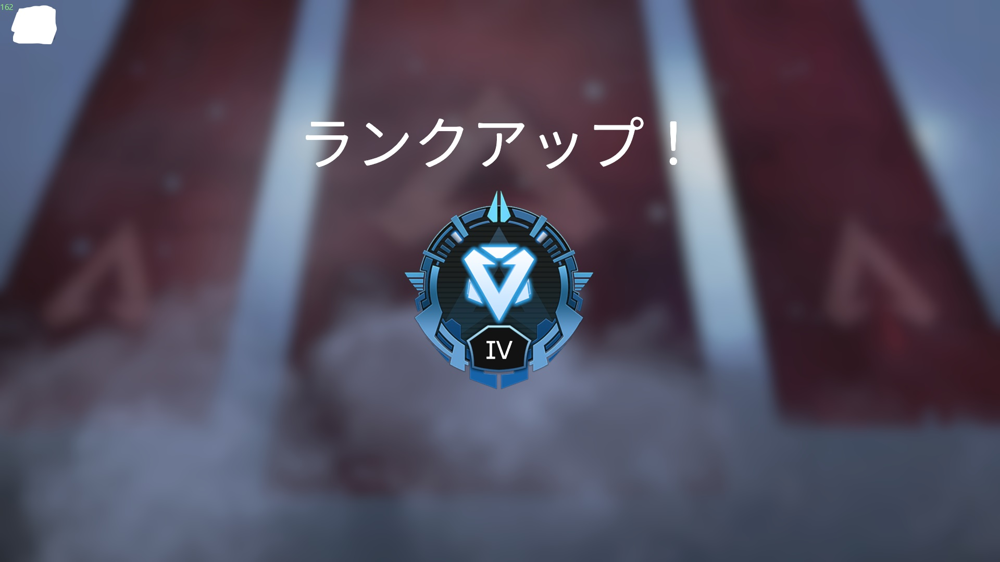
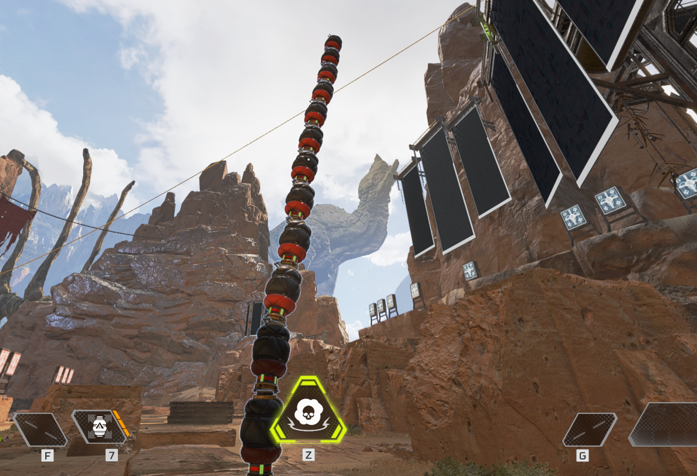

趣味
ゲーム
クリックで表示：Fate/Grand Orderって？
スマートフォン向けRPG。2015年から配信されている。
Fateシリーズから多数のキャラクターが登場するほか、本作オリジナルのキャラクターも多数登場する。プレイヤーは複数の英霊を「サーヴァント」として使役する「マスター」となり、人類史を守るため7つの「聖杯探索」（グランドオーダー）に身を投じる。(Wikipedia引用)

⇧人気(？)な蘆屋道満(リンボ)さん

⇧マスコットなフォウくん
{kind=link}

⇧福袋(課金ガチャ)でお目当てのキャラを当てれた時の写真
{kind=link}
セルラン上位常連のFGO。ストーリーが作りこまれていて面白い！キャラクターもそれぞれ特徴があっていいゲームです。
クリックで表示：Apex Legendsって何だ？
PC、PlayStation、Xbox、Nintendo Switchで配信されている、基本無料のFPS。
Respawn Entertainmentが開発し、エレクトロニック・アーツより2019年2月4日に配信開始。

⇧初ダイア行った時のスクショ。うれしかった
{kind=link}

⇧よくわからない遊び
{kind=link}
今流行りのApex...ハマってます。Apexが初のFPSだったのですが、凄く楽しめています。あまり上手くありませんが...精進します。
スーパーレジェンド武器持ってないです。ほしいです。
音楽鑑賞
よく聞いてるアーティストとか音楽とか
クリックで表示：Aimer
Aimer（エメ）は、日本の女性歌手。プロフィール非公開。所属レーベルはSACRA MUSIC、所属事務所はagehasprings。 アーティスト名は、自身の長年の愛称である「エメ」に由来し、フランス語で「愛する」「好む」を意味する動詞である。
自分はFateシリーズの主題歌を聞いて、すごく好きになりました。優しさの中に力強さがあり、とても心地良いです。
ぜひ聞いてみてください！
クリックで表示：LiSA
LiSA(リサ)は、日本の女性歌手。岐阜県関市出身。事務所はソニー・ミュージックアーティスツ。
血液型はB型。本名（出生名）：織部 里沙（おりべ りさ）。
2017年10月までに配信累計170万DLを記録。
2019年4月に先行フル配信された「紅蓮華」が、女性ソロアーティスト楽曲として初めて30万ダウンロードを突破。2020年7月には100万ダウンロードを超え、自身初となるミリオンを獲得した。また、オリコンチャートのシングル部門では平成最後と令和最初のウィークリー1位を獲得している
今では鬼滅の刃で非常に有名な方ですが、ソードアート・オンラインや魔法科高校の劣等生など様々なアニメの曲があります。
どれも素晴らしいものなので鬼滅の刃から知った方は是非色々聞いてみてください。